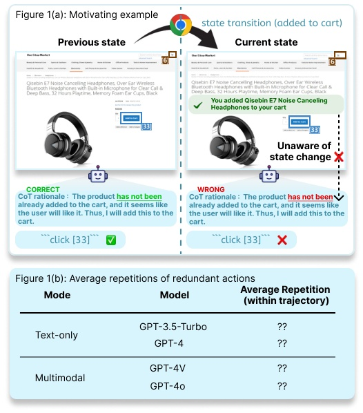
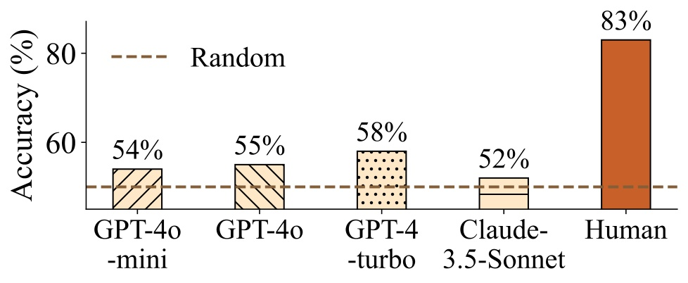
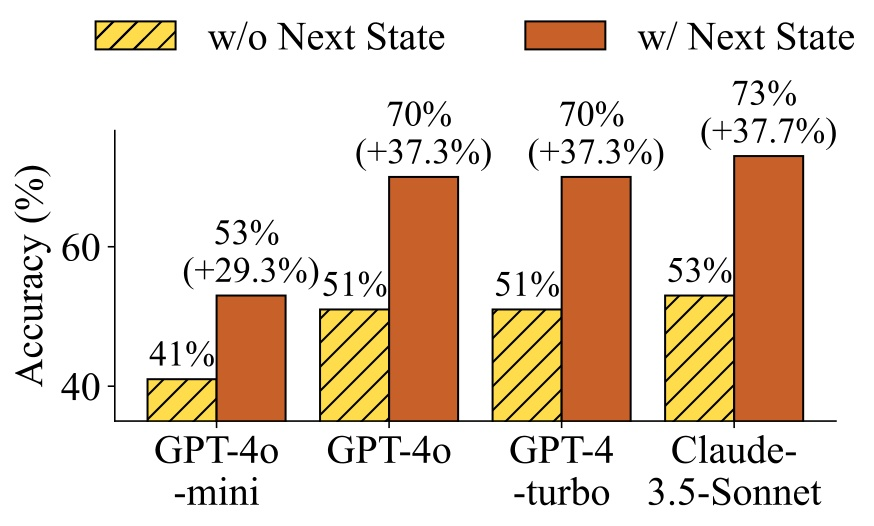
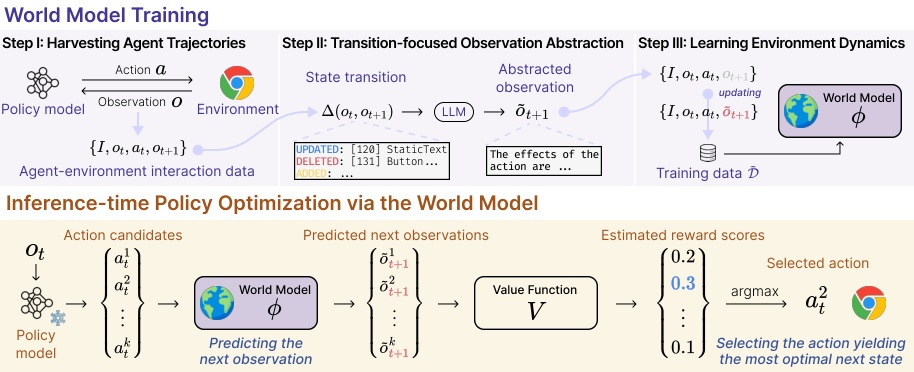
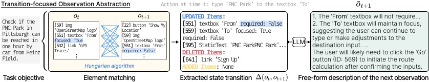
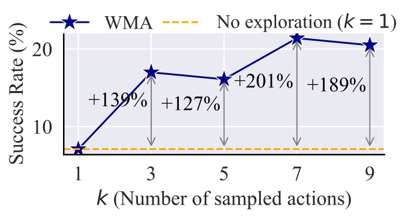
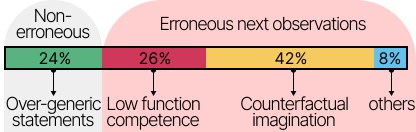

왜 웹 에이전트는 인간처럼 생각하지 못할까
흐름: 문제 제기 → 인간과의 비교 → 논문의 출발점
GPT-4 기반 웹 에이전트의 WebArena 성공률은 **14.4%**다. 인간이 같은 벤치마크에서 **78.2%**를 기록하는 것과 비교하면 엄청난 격차다. 왜 이런 차이가 생길까?
"Humans avoid unwanted situations by considering the possible outcomes of our actions beforehand. Such awareness of actions and outcomes is referred to as the 'world model'."
인간은 행동하기 전에 결과를 미리 상상한다. 환불 불가 항공권을 또 결제할 것 같으면 멈춘다. 장바구니에 이미 담긴 상품을 또 담지 않는다. 이 능력, 즉 "지금 이 행동을 하면 어떻게 될까?"를 내부에서 시뮬레이션하는 능력이 바로 **월드 모델(world model)**이다.
현재 LLM 기반 웹 에이전트에는 이 월드 모델이 없다. 그래서 trial-and-error에 의존하고, 돌이킬 수 없는 실수를 반복한다.

사전 분석: LLM에게 정말 월드 모델이 없는가
흐름: 분석 I (다음 상태 예측) → 분석 II (다음 상태를 줬을 때 행동 선택) → 시사점
LLM은 다음 상태를 예측하지 못한다
논문은 먼저 "LLM이 행동의 결과를 예측할 수 있는가?"를 실험으로 확인한다. WebArena에서 100개의 사용자 지시를 뽑아 인간이 주석을 단 궤적을 수집한 뒤, 각 스텝에서 모델에게 묻는다: "현재 상태와 이 행동이 주어졌을 때, 다음 상태 A와 B 중 어느 쪽이 맞는가?"
GPT-4o, Claude-3.5-Sonnet 등 최신 LLM 모두 평균 54.75% 정확도 — 사실상 랜덤 수준.
"Claude-3.5-Sonnet performs almost as badly as random guessing. These suggest that the world model, the ability to foresee the potential outcomes of actions taken, is absent in LLMs."

다음 상태를 알면 행동 선택이 확 좋아진다
두 번째 실험은 반대로 묻는다: "각 행동 후보의 다음 상태를 미리 알고 있다면 올바른 행동을 선택할 수 있는가?" 10개의 행동 후보와 각 행동의 다음 상태를 함께 제공한다.
GPT-4o: 다음 상태 없이 53% → 다음 상태 있을 때 73% (+20%p). 최대 +38%p 향상.

두 분석의 결론은 명확하다. LLM에는 월드 모델이 없다. 하지만 월드 모델을 주면 성능이 크게 오른다. 이것이 WMA 에이전트의 출발점이다.
WMA 프레임워크: 시뮬레이션 기반 정책 선택
흐름: 전체 구조 개요 → 월드 모델 학습 (3단계) → 추론 시 정책 최적화
전체 구조
WMA(World-Model-Augmented) 웹 에이전트는 세 컴포넌트로 구성된다:
- 정책 모델 θ: 행동 후보를 생성하는 LLM (GPT-4o). Frozen — 파라미터 업데이트 없음.
- 월드 모델 φ: 행동 후보 각각의 다음 상태를 시뮬레이션하는 fine-tuned Llama-3.1-8B.
- 가치 함수 V: 시뮬레이션된 다음 상태의 보상을 추정해 최적 행동을 고르는 fine-tuned Llama-3.1-8B.

월드 모델 학습 — Step 1: 데이터 수집
GPT-4o-mini를 정책 모델로 사용해 WebArena 환경에서 궤적을 수집한다. LLM으로 다양한 사용자 지시 870개를 합성하고, 각 지시당 5개 궤적을 수집해 총 14K 인스턴스의 학습 데이터를 만든다.
각 인스턴스는 (사용자 지시 I, 현재 관찰 o_t, 행동 a_t, 다음 관찰 o_{t+1}) 형태.
월드 모델 학습 — Step 2: Transition-focused Observation Abstraction
핵심 아이디어: 다음 상태 전체가 아니라 "변화한 부분"만 예측 목표로 삼는다.
왜 전체 다음 상태 예측이 문제인가?
- 웹 페이지 전환은 일부분만 바뀜 →
o_t와o_{t+1}대부분이 동일 → 정보 이득이 낮은 학습 - accessibility tree 평균 길이가 4K 토큰 → 학습 비용 폭증
"We propose to abstract raw text observations, with a focus on state transition between consecutive observations, for obtaining better training objectives."
구체적 절차:
- 헝가리안 알고리즘으로
o_t↔o_{t+1}요소를 매칭해 cost matrix 계산 ADDED / UPDATED / DELETED요소 목록Δ(o_t, o_{t+1})추출- LLM으로 이 diff를 자유형식 자연어 서술
tilde_o_{t+1}로 변환
이렇게 만든 tilde_o는 짧고 정보 밀도가 높다. 이것이 월드 모델의 학습 목표다.
accessibility tree는 그냥 요소 목록이라, o_t의 어떤 요소가 o_{t+1}의 어떤 요소로 바뀐 건지 대응 관계를 모른다. 이걸 찾기 위해 "비슷한 텍스트 = 같은 요소"라는 가정을 쓴다. 웹 컴포넌트는 시간이 지나도 텍스트가 크게 안 변하기 때문에 합리적인 휴리스틱이다.
구체적으로, Python의 difflib.SequenceMatcher로 두 요소 텍스트의 유사도(0~1)를 구하고, 비용 = 1 - 유사도로 변환한다. 예를 들어 button "Add to Cart"와 button "Added ✓"는 유사도 0.74 → 비용 0.26, button "Add to Cart"와 price "$249"는 유사도 0.06 → 비용 0.94.
헝가리안 알고리즘은 이 cost matrix에서 각 행·열에서 딱 하나씩 골라 전체 비용 합이 최소인 1:1 매칭을 O(n³)으로 보장한다. 매칭된 쌍 중 텍스트가 바뀐 것은 UPDATED, 매칭 못 된 o_t 요소는 DELETED, 매칭 못 된 o_{t+1} 요소는 ADDED.

월드 모델 학습 — Step 3: 환경 동역학 학습
추상화된 데이터셋 tilde_D = {I, o_t, a_t, tilde_o_{t+1}}로 Llama-3.1-8B-Instruct를 fine-tuning한다. 학습 목표는 next-token prediction:
여기서 tilde_o_{t+1}은 전체 accessibility tree가 아니라 자연어 서술이다. 예: "장바구니 버튼이 'Add to Cart'에서 'Added ✓'로 변경됐고, 상품 가격이 $299에서 $249로 내려갔습니다." 가치 함수 V도 이 자연어를 입력으로 받아 보상을 추정한다. 전체 tree(4K 토큰) 대신 변화 요약만 다루기 때문에 월드 모델 학습도, 추론 시 입력도 모두 짧아진다.
추론 시 정책 최적화
추론 단계에서 WMA 에이전트는 다음 절차를 따른다:
- 정책 모델 θ에서 top-p decoding으로 k개 행동 후보
{a_t^1, ..., a_t^k}샘플링 - 월드 모델 φ로 각 후보의 다음 상태 시뮬레이션:
tilde_o_{t+1}^i = φ(o_t, a_t^i, I) - 가치 함수 V로 각 시뮬레이션 결과의 보상 추정 → 보상이 가장 높은 행동 선택:
hat_a_t = argmax V(I, o_t, a_t^i, tilde_o_{t+1}^i)
실제 환경과 상호작용 없이 시뮬레이션만으로 최적 행동을 고르기 때문에, Tree Search처럼 여러 궤적을 실제로 탐색할 필요가 없다.
실험 결과
흐름: WebArena 성능 → Mind2Web 성능 → 비용·시간 효율 비교
WebArena
| 방법 | Success Rate |
|---|---|
| CoT (GPT-4o) | 13.1% |
| WMA (GPT-4o) | 16.6% |
| Tree Search Agent | 19.2% |
WMA는 CoT 대비 **+3.5%p (약 27% 향상)**을 보인다. Tree Search와 비교하면 절대 수치는 약간 낮지만, CoT 대비 성능 향상폭(+29.7% vs +28.0%)은 오히려 더 크다. GPT-4o-mini 사용 시 Gitlab에서 +181%, Map에서 +92% 성능 향상.
Mind2Web — 새 SOTA 달성
Mind2Web에서는 이전 SOTA인 AWM을 뛰어넘어 새 SOTA를 달성한다. Tree Search는 오프라인 벤치마크라 환경이 없어 적용 불가한 반면, WMA는 오프라인 궤적 데이터만으로도 학습 가능하다는 강점이 있다.
비용과 시간 — Tree Search 대비 압도적 효율
| 방법 | 시간 (초/태스크) | 상대 비용 |
|---|---|---|
| Tree Search Agent | 748.3초 | 6.8× |
| WMA (ours) | 140.3초 | 1× |
"WMA web agent only takes 140.3 seconds per instance by simulating the possible action candidates rather than actually executing them, which is 5.3 times faster than Tree search agent."
Tree Search는 backtracing 시 이전 행동 시퀀스를 전부 재실행해야 해서 느리고 비싸다. WMA는 시뮬레이션만 하기 때문에 비용 6.8배 절감, 속도 5.3배 향상.
분석 및 Ablation
흐름: Ablation 결과 → 월드 모델 에러 유형 분석 → 탐색 예산(k) 효과
Ablation: 무엇이 중요한가
- 시뮬레이션된 다음 상태 없이 보상 추정: 성능 하락 → 다음 상태 정보가 가치 함수 추정에 필수적
- fine-tuning 없이 GPT-4o-mini 프롬프팅으로 월드 모델 대체: 성능 크게 하락 → SOTA LLM도 fine-tuning 없이는 환경 동역학 지식이 부족
- 전체 accessibility tree 예측 (abstraction 없이): 가장 나쁜 성능 → 중복 정보가 학습을 방해
탐색 예산 k

k(샘플링 행동 수)가 늘어날수록 성능이 향상되는 양의 상관관계가 있다. 예산이 허용된다면 더 많은 미래 상태를 탐색할수록 유리하다.
월드 모델의 에러 유형

- 반사실적 상상 (42%): 존재하지 않는 상품이나 요소를 만들어 냄
- 웹 컴포넌트 이해 부족 (26%): 검색창에 기존 텍스트를 지우지 않은 채 새 키워드를 입력하면 어떻게 될지 예측 실패
- 지나치게 모호한 서술 (24%): "사용자는 다양한 기능을 볼 것입니다" 같은 무의미한 수준의 일반화
- 기타 (8%): 현재 시점을 건너뛴 예측 등
정리
WMA는 LLM 웹 에이전트에 월드 모델을 접목한 최초의 연구로, "시뮬레이션 → 평가 → 선택"이라는 패러다임을 제시한다.
핵심 기여를 세 줄로 요약하면:
- Transition-focused Observation Abstraction: 다음 상태 전체가 아닌 변화분만 학습해 효율적인 월드 모델 훈련
- Training-free 정책 최적화: 정책 모델을 건드리지 않고 월드 모델 + 가치 함수만으로 기존 에이전트에 plug-in 가능
- Tree Search 대비 6.8× 비용 절감, 5.3× 속도 향상으로 비슷한 성능
웹 에이전트 연구의 다음 단계는 월드 모델의 반사실적 환각 문제를 줄이고, 더 복잡한 상태 공간(쇼핑 등)에서의 정확도를 높이는 것이 과제로 남는다.